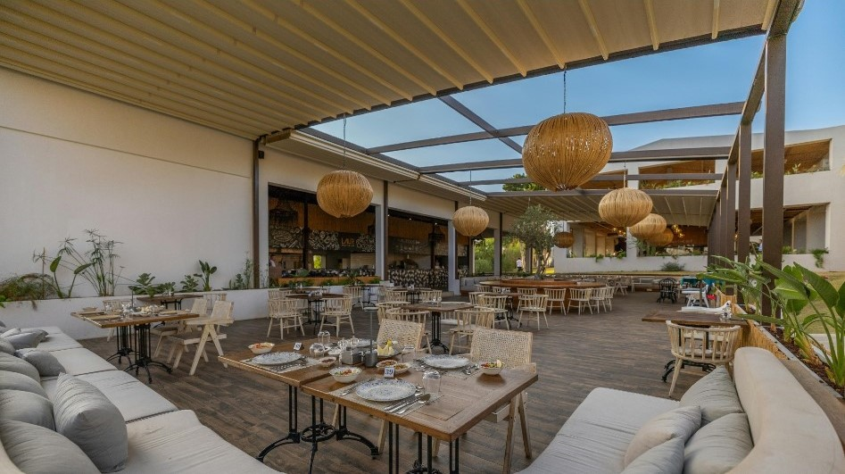

¿Que es Dialados?
En un ambiente elegante y acogedor, Dialados es el lugar ideal para disfrutar de una experiencia culinaria inolvidable en compañía de familia, amigos o pareja. Su cuidada decoración y atención al detalle crean el escenario perfecto para compartir momentos especiales. La cocina innovadora sorprende con sabores únicos, combinando ingredientes frescos y técnicas vanguardistas que despiertan todos los sentidos. Cada plato es una invitación a descubrir nuevas sensaciones, ideal para quienes buscan algo diferente. Ya sea una celebración íntima o una cena relajada, Dialados ofrece el equilibrio perfecto entre sofisticación, calidez y creatividad gastronómica.
Dialados está ubicado en el corazón de la Ciudad de las Artes y las Ciencias, un entorno emblemático que combina arte, ciencia y arquitectura. Su privilegiada localización lo convierte en el lugar perfecto para disfrutar de la alta gastronomía en un ambiente único y cultural
¿Donde nos encontramos?